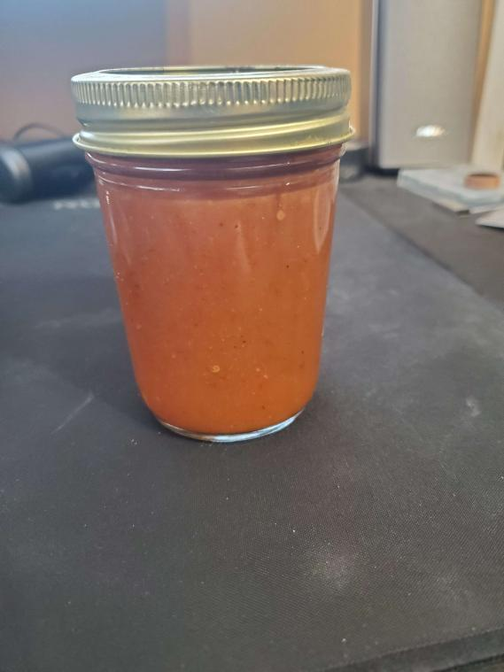

Home
Happy Habanero Sauce

Description
This recipe is my go to for making an enjoyable hotsauce that will blow any local resturants out of the ball park on heat level while still being enjoyable for the average heat enjoyer.
I do not recomend serving this sauce to people who are not known to enjoy spice. It will be hotter than anything they have tried before and they may cry.
This sauce has a smokey habanero flavour, decent heat level, and is simple though a little time consuming to make.
You will need
- A smoker
- A pan
- A sauce pan
- a blender you will only ever use for hotsauce
- Nitril gloves
- containers for finished product (i use mason jars)
- A outdoor cooking area(the fumes get bad)
- 12 whole habanero peppers
- 2/3 cup of chopped onions
- 5 cloves of garlic
- 2 tsp salt
- 1 tsp sugar
- 1/4 tsp honey or maple syrup
- 1 cup apple cider vinegar
- 1½ cups of water
- 2 Tbs fresh squeezed lemon juice
Steps
- Begin preheating smoker to 200f
- Using gloves cut habaneros in half to ensure there is no mold, or insects inside.
- place habaneros cut side up on jerky tray for smoker
- once smoker is heated smoke habeneros for 2-3 hours (3 hours is better for stronegr smokey flavour)
- with 20-30 minutes left on smoker prepare your outdoor cooking area and pan
- Pan roast your garlic
- Add onions, carrots, apple cider vinegar, water, honey, and lemon juice into a saucpan and bring to a simmer
- once simmering add smoked habeneros. half cover with lid and let simmer for 20 minutesor untill everything is soft stiring occasionaly
- once all everything is soft add all ingredients from the pot, and the roasted garlic, salt, and sugar to the blender and blend well for a few minutes
- pour contents of blender back into saucepan and simmer for another 10 minutes
- pour contents of sauce pan back into blender and puree for a few more minutes
- while still hot bottle and seal